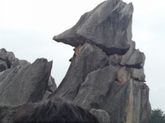
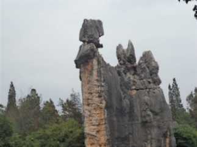
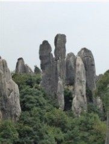
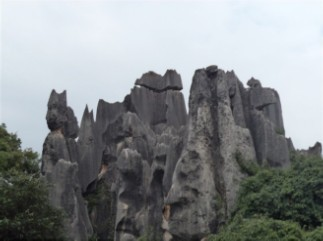
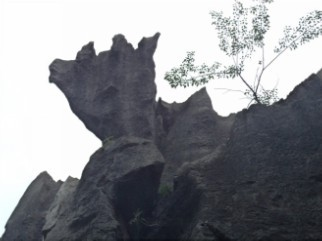
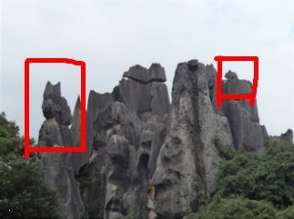
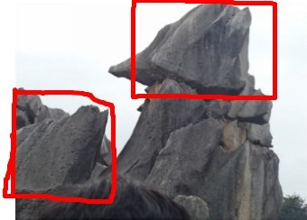

猜对石头的名字奖励鲜花
#1 猜对石头的名字奖励鲜花 作者：蓝天蓝 发表时间：2011-7-7 18:57:53
下面这些石头的名字每猜对一个送鲜花2朵





［此帖子已被 蓝天蓝 在 2011-7-7 19:14:03 编辑过］
#2 Re:猜对石头的名字奖励鲜花 作者：死劲哭 发表时间：2011-7-7 18:59:30
嘻嘻，我还是不猜了，因为我记忆力很不差 这样拿花总觉得有点那个了
这样拿花总觉得有点那个了
#3 Re:Re:猜对石头的名字奖励鲜花 作者：蓝天蓝 发表时间：2011-7-7 19:00:57
引用：猜猜也没有什么的，热闹一下
原文由 死劲哭 发表于 2011-7-7 18:59:30 :
嘻嘻，我还是不猜了，因为我记忆力很不差
#4 Re:猜对石头的名字奖励鲜花 作者：被感动的人 发表时间：2011-7-7 19:05:35
猜名字够呛，我起名字吧~
第一块 天狗望月
第二块 驼
第四块 守望
［ 隐藏菜系 于 2011-7-7 19:26:29 时花20金币送鲜花一朵］
#5 Re:Re:猜对石头的名字奖励鲜花 作者：蓝天蓝 发表时间：2011-7-7 19:07:57
引用：没有一个贴切的，不能奖励鲜花了
原文由 被感动的人 发表于 2011-7-7 19:05:35 :猜名字够呛，我起名字吧~
第一块 天狗望月
第二块 驼
第四块 守望
#6 Re:猜对石头的名字奖励鲜花 作者：梧桐风 发表时间：2011-7-7 19:07:59
 木有去过，围观
木有去过，围观
#7 Re:Re:Re:猜对石头的名字奖励鲜花 作者：被感动的人 发表时间：2011-7-7 19:11:49
引用：
原文由 蓝天蓝 发表于 2011-7-7 19:07:57 :引用：没有一个贴切的，不能奖励鲜花了
原文由 被感动的人 发表于 2011-7-7 19:05:35 :猜名字够呛，我起名字吧~
第一块 天狗望月
第二块 驼
第四块 守望
 我就是看着像嘛~你看第一图不像一只大狗仰头望天吗？第二图不像一只骆驼吗？第四图稍远地方的石头怎么看都像一个下凡的仙女俏生生站着等人的样子，至于比较近的那些大块头的人，因为不够美女，被我忽略~
我就是看着像嘛~你看第一图不像一只大狗仰头望天吗？第二图不像一只骆驼吗？第四图稍远地方的石头怎么看都像一个下凡的仙女俏生生站着等人的样子，至于比较近的那些大块头的人，因为不够美女，被我忽略~
#8 Re:Re:Re:猜对石头的名字奖励鲜花 作者：死劲哭 发表时间：2011-7-7 19:16:53
引用：
原文由 蓝天蓝 发表于 2011-7-7 19:00:57 :引用：猜猜也没有什么的，热闹一下
原文由 死劲哭 发表于 2011-7-7 18:59:30 :
嘻嘻，我还是不猜了，因为我记忆力很不差
我那根本就不能叫猜，因为这几个景点我都记忆犹新，导游讲解的也很详细
我围观支持！
［ 蓝天蓝 于 2011-7-7 19:21:40 时花20金币送鲜花一朵］
#9 Re:猜对石头的名字奖励鲜花 作者：被感动的人 发表时间：2011-7-7 19:17:57
我说第五幅是舔犊情深，要不就叫最是那一低头的温柔，话说多像一牛头啊~可蓝天姐说我猜得不对，不沾边。同学们快猜啊~你再离谱还能有我的离谱吗？有我垫底，大家可以尽情地猜~
［ 蓝天蓝 于 2011-7-7 19:22:39 时花20金币送鲜花一朵］
［ 隐藏菜系 于 2011-7-7 19:27:25 时花20金币送鲜花一朵］
#10 Re:Re:Re:Re:猜对石头的名字奖励鲜花 作者：蓝天蓝 发表时间：2011-7-7 19:19:13
引用：
原文由 被感动的人 发表于 2011-7-7 19:11:49 :引用：
原文由 蓝天蓝 发表于 2011-7-7 19:07:57 :引用：没有一个贴切的，不能奖励鲜花了
原文由 被感动的人 发表于 2011-7-7 19:05:35 :猜名字够呛，我起名字吧~
第一块 天狗望月
第二块 驼
第四块 守望
图中是有一个美女化身成石头的，名字叫阿诗玛。猜猜是那个石头吧
［此帖子已被 蓝天蓝 在 2011-7-7 19:21:04 编辑过］
#11 Re:猜对石头的名字奖励鲜花 作者：被感动的人 发表时间：2011-7-7 19:21:51
看不出，我就觉得第四图稍远点那块石头像美女，既然不是，那就瞎猜吧~骆驼美女——第二幅好了［ 蓝天蓝 于 2011-7-7 19:26:57 时花20金币送鲜花一朵］
［ 蓝天蓝 于 2011-7-7 19:27:12 时花20金币送鲜花一朵］
#12 Re:Re:猜对石头的名字奖励鲜花 作者：蓝天蓝 发表时间：2011-7-7 19:26:28
引用：第二副确实是美女化身，美女名字叫 阿诗玛
原文由 被感动的人 发表于 2011-7-7 19:21:51 :
看不出，我就觉得第四图稍远点那块石头像美女，既然不是，那就瞎猜吧~骆驼美女——第二幅好了
［ 小红眼镜 于 2011-7-7 20:55:51 时花20金币送鲜花一朵］
#13 Re:Re:Re:猜对石头的名字奖励鲜花 作者：小红眼镜 发表时间：2011-7-7 20:23:22
引用：
原文由 蓝天蓝 发表于 2011-7-7 19:26:28 :引用：第二副确实是美女化身，美女名字叫阿诗玛
原文由 被感动的人 发表于 2011-7-7 19:21:51 :
看不出，我就觉得第四图稍远点那块石头像美女，既然不是，那就瞎猜吧~骆驼美女——第二幅好了
那我猜石像名字就叫做“阿诗玛”哈哈。。我是不是很聪明。。。［ 被感动的人 于 2011-7-7 20:26:47 时花20金币送鲜花一朵］
［ 被感动的人 于 2011-7-7 20:26:58 时花20金币送鲜花一朵］
［ 蓝天蓝 于 2011-7-7 21:01:45 时花20金币送鲜花一朵］
［ 蓝天蓝 于 2011-7-7 21:02:33 时花20金币送鲜花一朵］
#14 Re:Re:Re:Re:猜对石头的名字奖励鲜花 作者：死劲哭 发表时间：2011-7-7 20:25:59
引用：您实在是太聪明了！前无古人，后无来者。
原文由 小红眼镜 发表于 2011-7-7 20:23:22 :引用：
原文由 蓝天蓝 发表于 2011-7-7 19:26:28 :第二副确实是美女化身，美女名字叫阿诗玛
#15 Re:猜对石头的名字奖励鲜花 作者：小红眼镜 发表时间：2011-7-7 20:54:47
哈哈。。我脸皮厚。。。所以就得到鲜花了。。。
#16 Re:Re:Re:Re:猜对石头的名字奖励鲜花 作者：蓝天蓝 发表时间：2011-7-7 21:06:14
引用：
原文由 小红眼镜 发表于 2011-7-7 20:23:22 :引用：
原文由 蓝天蓝 发表于 2011-7-7 19:26:28 :引用：第二副确实是美女化身，美女名字叫阿诗玛
原文由 被感动的人 发表于 2011-7-7 19:21:51 :
看不出，我就觉得第四图稍远点那块石头像美女，既然不是，那就瞎猜吧~骆驼美女——第二幅好了［ 被感动的人 于 2011-7-7 20:26:47 时花20金币送鲜花一朵］
［ 被感动的人 于 2011-7-7 20:26:58 时花20金币送鲜花一朵］
［ 蓝天蓝 于 2011-7-7 21:01:45 时花20金币送鲜花一朵］
［ 蓝天蓝 于 2011-7-7 21:02:33 时花20金币送鲜花一朵］
猜一下其他石头的名字吧，你这么聪明一定猜得到
#17 Re:Re:Re:Re:Re:猜对石头的名字奖励鲜花 作者：死劲哭 发表时间：2011-7-7 21:13:24
引用：
原文由 蓝天蓝 发表于 2011-7-7 21:06:14 :猜一下其他石头的名字吧，你这么聪明一定猜得到
 姐姐，您这可要了他的命了
姐姐，您这可要了他的命了
#18 Re:Re:Re:Re:Re:猜对石头的名字奖励鲜花 作者：小红眼镜 发表时间：2011-7-7 22:14:23
引用：
原文由 蓝天蓝 发表于 2011-7-7 21:06:14 :猜一下其他石头的名字吧，你这么聪明一定猜得到
太有难度了。。这次瞎蒙一个。。。第三张。。石簇擎天
#19 Re:Re:Re:Re:Re:Re:猜对石头的名字奖励鲜花 作者：蓝天蓝 发表时间：2011-7-7 22:56:40
引用：不对
原文由 小红眼镜 发表于 2011-7-7 22:14:23 :引用：
原文由 蓝天蓝 发表于 2011-7-7 21:06:14 :猜一下其他石头的名字吧，你这么聪明一定猜得到
#20 Re:Re:Re:Re:Re:Re:Re:猜对石头的名字奖励鲜花 作者：小红眼镜 发表时间：2011-7-7 23:16:46
引用：
原文由 蓝天蓝 发表于 2011-7-7 22:56:40 :引用：不对
原文由 小红眼镜 发表于 2011-7-7 22:14:23 :引用：
原文由 蓝天蓝 发表于 2011-7-7 21:06:14 :猜一下其他石头的名字吧，你这么聪明一定猜得到
瞎蒙果然不行。。。不蒙了。。。。搬板凳坐等答案。。。
#21 Re:猜对石头的名字奖励鲜花 作者：蓝天蓝 发表时间：2011-7-8 0:10:48
其实仔细看看也应该不难猜出来的，有的石头还是挺形象的，比如提示一下 第四张图，上面是2个动物

看看是什么动物，再根据动物名字连成一句话
［此帖子已被 蓝天蓝 在 2011-7-8 0:11:59 编辑过］
#22 Re:Re:猜对石头的名字奖励鲜花 作者：小红眼镜 发表时间：2011-7-8 1:27:02
引用：
原文由 蓝天蓝 发表于 2011-7-8 0:10:48 :其实仔细看看也应该不难猜出来的，有的石头还是挺形象的，比如提示一下 第四张图，上面是2个动物
看看是什么动物，再根据动物名字连成一句话
［此帖子已被 蓝天蓝 在 2011-7-8 0:11:59 编辑过］
哇。老鼠与猫。。。。左边的是只猫。。右边的超级小老鼠。。。。哈哈［ 蓝天蓝 于 2011-7-8 6:35:03 时花20金币送鲜花一朵］
［ 蓝天蓝 于 2011-7-8 6:35:35 时花20金币送鲜花一朵］
#23 Re:猜对石头的名字奖励鲜花 作者：掌棋宣传员 发表时间：2011-7-8 1:34:17
远看石头大,近看大石头...［ 小红眼镜 于 2011-7-8 1:34:57 时花20金币送鲜花一朵］
［ 蓝天蓝 于 2011-7-8 6:38:14 时花20金币送鲜花一朵］
#24 Re:Re:猜对石头的名字奖励鲜花 作者：小红眼镜 发表时间：2011-7-8 1:35:58
引用：
原文由 掌棋宣传员 发表于 2011-7-8 1:34:17 :
远看石头大,近看大石头...［ 小红眼镜 于 2011-7-8 1:34:57 时花20金币送鲜花一朵］
膜拜。。。。。。。。
#25 Re:Re:Re:猜对石头的名字奖励鲜花 作者：蓝天蓝 发表时间：2011-7-8 6:37:51
引用：答案是猫爱上老鼠，不是老鼠与猫，不过你还是挺聪明滴
原文由 小红眼镜 发表于 2011-7-8 1:27:02 :引用：
原文由 蓝天蓝 发表于 2011-7-8 0:10:48 :其实仔细看看也应该不难猜出来的，有的石头还是挺形象的，比如提示一下 第四张图，上面是2个动物
看看是什么动物，再根据动物名字连成一句话
［此帖子已被 蓝天蓝 在 2011-7-8 0:11:59 编辑过］
［ 蓝天蓝 于 2011-7-8 6:35:03 时花20金币送鲜花一朵］
［ 蓝天蓝 于 2011-7-8 6:35:35 时花20金币送鲜花一朵］
看出是猫和老鼠了
［此帖子已被 蓝天蓝 在 2011-7-8 6:52:53 编辑过］
#26 Re:Re:猜对石头的名字奖励鲜花 作者：蓝天蓝 发表时间：2011-7-8 6:40:30
引用：九指 师傅 就是不一般，“远看石头大,近看大石头...”，有当初郭沫若的风范
原文由 掌棋宣传员 发表于 2011-7-8 1:34:17 :
远看石头大,近看大石头...［ 小红眼镜 于 2011-7-8 1:34:57 时花20金币送鲜花一朵］
［ 蓝天蓝 于 2011-7-8 6:38:14 时花20金币送鲜花一朵］

#27 Re:猜对石头的名字奖励鲜花 作者：蓝天蓝 发表时间：2011-7-8 6:44:06
再提示一个，上面是什么，下面的在抬着头想什么，这个没有照全，但是这句话大家经常说的一句话，形容人有点异想天开。

［此帖子已被 蓝天蓝 在 2011-7-8 6:47:14 编辑过］
#28 Re:猜对石头的名字奖励鲜花 作者：死劲哭 发表时间：2011-7-9 10:43:17
远看大石头，近看石头大，石头实在大，实在大石头。［ 蓝天蓝 于 2011-7-9 15:20:42 时花20金币送鲜花一朵］
#29 Re:猜对石头的名字奖励鲜花 作者：小丸.net 发表时间：2011-7-9 10:50:45
石山是山，山石是石，石山山上有山石，山石石上有石山。［ 蓝天蓝 于 2011-7-9 15:20:02 时花20金币送鲜花一朵］
［ 蓝天蓝 于 2011-7-9 15:22:07 时花20金币送鲜花一朵］
#30 Re:猜对石头的名字奖励鲜花 作者：死劲哭 发表时间：2011-7-9 15:34:18
假话是话，话假是假。假话假中含话假，话假假里藏假话。［ 蓝天蓝 于 2011-7-9 16:05:50 时花20金币送鲜花一朵］
［ 蓝天蓝 于 2011-7-9 16:06:46 时花20金币送鲜花一朵］
#31 Re:猜对石头的名字奖励鲜花 作者：死劲哭 发表时间：2011-7-9 16:08:27
以后姐姐的帖子我是坚决一顶到底
#32 Re:猜对石头的名字奖励鲜花 作者：蓝天蓝 发表时间：2011-7-9 16:14:05
石山是山，山石是石，石山山上有山石，山石石上有石山——小丸.net
假话是话，话假是假，假话假中含话假，话假假里藏假话——死劲哭
大家对上对联了，接着猜石头名字吧